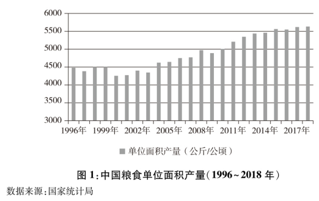
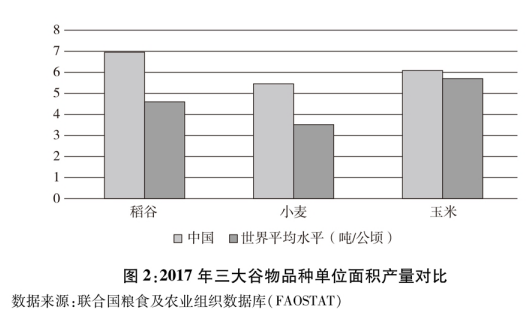
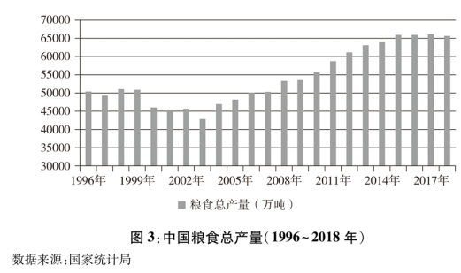

真题 · 实用类文本阅读
高标准农田与粮食安全
三则材料和三幅图表呈现全国粮食生产概况、临朐县山地农田改造与江下村的高标准农田建设。
导读
文体与题材：实用类文本阅读；三则材料和三幅图表呈现全国粮食生产概况、临朐县山地农田改造与江下村的高标准农田建设。
文本出处：2021年高考全国乙卷。国务院新闻办公室《中国的粮食安全》白皮书；张正瑜等《山东临朐 立足山区实际 科学谋划建设高标准农田》；李慧《粮食安全：把饭碗牢牢端在自己手中》（《光明日报》2020年12月24日）。
内容脉络：材料一：粮食安全成就与产量变化；材料二：临朐县山区高标准农田建设；材料三：江下村农田改造与技术运用。
阅读重点：先辨认材料所述事实与作者判断，再按题干逐项核对对象、范围、条件和推断方向。
原文与随文研读
原文按结构分节；随文内容可定位至对应段落。
材料一：中国依靠自身力量保障粮食基本自给，并通过产能建设与政策部署维护粮食安全。
新中国成立后，中国始终把解决人民吃饭问题作为治国安邦的首要任务。70年来，在中国共产党领导下，经过艰苦奋斗和不懈努力，中国在农业基础十分薄弱、人民生活极端贫困的基础上，依靠自己的力量实现了粮食基本自给，不仅成功解决了近14亿人口的吃饭问题，而且居民生活质量和营养水平显著提升，粮食安全取得了举世瞩目的巨大成就。
党的十八大以来，以习近平同志为核心的党中央把粮食安全作为治国理政的头等大事，提出了“确保谷物基本自给、口粮绝对安全”的新粮食安全观，确立了以我为主、立足国内、确保产能、适度进口、科技支撑的国家粮食安全战略，走出了一条中国特色粮食安全之路。



材料二：临朐县针对山区耕地零散、设施不足的问题建设高标准农田，夯实稳产增产基础。
山东省临朐县是一个有着90多万人口和近90万亩耕地的山区农业大县。临朐县山区丘陵面积较大，而且地形错综复杂，起伏多变，成百上千亩集中连片且开阔平坦的农田很少见，加之农田基础设施落后，从自然村落到田间地头的道路基本都是土路，交通极其不便。用乡亲们的话说：“开门就见山，种田走半天。耕地就像百衲衣，一顶苇笠也能盖一块地。”近年来，临朐县在推进高标准农田建设时，立足山区实际，把解决地块零散、水电路不配套等问题作为重点，坚持集中连片规划建设，着力补齐农业基础设施短板，合理利用土地资源，为粮食稳产增产夯实了基础。“十三五”以来，全县共改造中低产田3.73万亩，建成高标准农田12万亩。
材料三：江下村通过农田改造、机械化和技术应用提高耕地质量与粮食产能，带动农民增收。
近几年，江西省南昌市安义县长埠镇江下村村容村貌有了翻天覆地的变化，全村6个村小组前前后后共修建了逾11公里的水泥路，95％的水塘进行了清淤处理，建成了3.2公里高标准农田沟渠。过去，江下村因土地贫瘠，一直没有找到产业发展的好路子，祖辈守着一亩三分地种水稻及常规农作物，产量较低的“斗笠田”随处可见。为改变现状，村干部主动为江下村争取了高标准农田项目，引进种粮大户盘活荒地。作为高标准农田的“集成模块”，越来越多的新技术在江下村大显身手——粮食耕、种、管、收实现全程机械化，逐步提高智能作业的精准度和覆盖率……去年11月，江下村2168亩高标准农田建设项目开始动工，项目如今已全部完成。现在村里的耕地质量普遍提升两个等级，粮食产能平均提高15％，亩均粮食产量提高100公斤，高标准农田已成为带动农民持续增收、实现贫困群众稳步脱贫的有力引擎。
第1题 · 图文判断
4．下列对材料一相关内容的理解和分析，不正确的一项是（）
A．我国粮食单位面积产量显著提高，2010年开始平均每公顷粮食产量突破5000公斤，粮食生产取得了举世瞩目的巨大成就。
B．2017年我国稻谷、小麦、玉米的每公顷产量明显高于世界平均水平，可见居民的生活质量和营养水平得到了显著提升。
C．2003～2015年，粮食总产量连续多年保持增长势头，中国特色粮食安全之路越走越稳健，粮食生产能力不断增强。
D．从2015年起，我国粮食总产量连续四年稳定在65000万吨以上水平，这有助于保障国家粮食安全、促进经济社会发展。
参考答案1展开 / 收起
参考作答
B。
文本分析
A项查看证据 ↗
图1显示单位面积产量总体上升，2010年以后越过每公顷5000公斤；文字材料概述粮食生产成就，判断成立。
B项查看证据 ↗
图2确实显示三种谷物的中国单产高于世界平均值；但单产比较并不能独自证明居民生活质量和营养水平提高。选项把生产指标和生活指标接成无依据的推论。
C项查看证据 ↗
图3显示2003年至2015年粮食总产量总体持续增长，与生产能力提高的判断相符。
D项查看证据 ↗
图3显示2015年至2018年粮食总产量保持在65000万吨以上；稳定供给与粮食安全的关系可由材料一的政策目标解释。
知识点
第2题 · 跨材料概括
5．下列对材料相关内容的概括和分析，正确的一项是（）
A．交通极其不便、产业发展路径缺失、开阔平坦的农田数量较少，这些曾经是制约临朐县山区发展现代农业的主要因素。
B．在提升粮食产能方面，临朐县山区与安义县江下村的工作侧重点有所不同，前者着力解决地块零散的问题，后者着重改变村容村貌。
C．“开门就见山，种田走半天”，这是临朐县山区地形和耕地的特点，安义县江下村“斗笠田”的地形地貌也呈现出这种特点。
D．村干部主动作为，引进种粮大户盘活荒地，利用新技术推进农业机械化，这是推动江下村农民持续增收、稳步脱贫的有效举措。
参考答案2展开 / 收起
参考作答
D。
文本分析
A项查看证据 ↗
“产业发展路径缺失”见材料三的江下村，不属材料二的临朐县；选项拼接两地情形。
B项查看证据 ↗
临朐同时着力解决地块零散和水电路不配套；江下村通过农田项目、荒地盘活和技术应用提高产能，改变村貌并非主要生产措施。
C项查看证据 ↗
临朐乡亲的话说明山地耕地零散与交通不便；材料三只说江下村有“斗笠田”，不能据此断定两地地形地貌相同。
D项查看证据 ↗
江下村争取高标准农田项目、引进种粮大户并实行机械化，材料三将这些举措与产能提升、农民增收相联系。
知识点
第3题 · 共同经验
6．在促进粮食增产方面，临朐县山区与安义县江下村有哪些相同的经验，请概括说明。
参考答案3展开 / 收起
参考作答
1．两地均推进高标准农田建设。临朐改造中低产田并建设高标准农田；江下村实施2168亩高标准农田项目。
2．两地均补足农业基础设施。临朐集中解决水、电、路不配套，江下村修路、清淤并建设农田沟渠。
3．两地均根据本地耕地条件改善土地利用。临朐因地制宜、连片规划，江下村引进种粮大户盘活荒地并运用新技术。
文本分析
要点1查看证据 ↗
两地均推进高标准农田建设。临朐改造中低产田并建设高标准农田；江下村实施2168亩高标准农田项目。
要点2查看证据 ↗
两地均补足农业基础设施。临朐集中解决水、电、路不配套，江下村修路、清淤并建设农田沟渠。
要点3查看证据 ↗
两地均根据本地耕地条件改善土地利用。临朐因地制宜、连片规划，江下村引进种粮大户盘活荒地并运用新技术。
知识点
参考文献
2021年高考全国乙卷第4—6题；国务院新闻办公室《中国的粮食安全》白皮书；张正瑜等《山东临朐 立足山区实际 科学谋划建设高标准农田》；李慧《粮食安全：把饭碗牢牢端在自己手中》（《光明日报》2020年12月24日）。